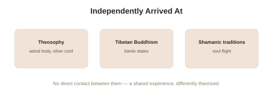

Chapter 5: Cultural and Historical Accounts Across Traditions
Four chapters have covered this topic through neuroscience, physiology, controlled testing, and clinical taxonomy. This closing chapter turns to something those methods necessarily leave out: this experience has an independent, much older life inside specific spiritual and cultural traditions, developed entirely without access to TPJ stimulation studies or hidden-target hospital trials — and understanding what those traditions actually claim, on their own terms, rounds out the picture this topic has been building.
Theosophy and the codification of "astral projection"
The specific term astral projection and much of its modern popular framework trace substantially to the late 19th and early 20th century Theosophical movement, associated with figures like Helena Blavatsky and later systematized by writers such as Robert Bruce and Sylvan Muldoon. This tradition developed a detailed cosmology around the concept of an astral body (in Theosophical and related esoteric traditions, a subtle, non-physical body understood as capable of detaching from the physical body and traveling independently, sometimes described as connected to the physical body by a "silver cord"), along with specific techniques practitioners claimed could induce deliberate, voluntary projection rather than only experiencing it spontaneously. This is a genuinely different kind of claim from what Chapters 1 through 4 tested — not simply "this experience happens," which nobody in this topic disputes, but a specific metaphysical architecture (a literal separable astral body, connected by a cord, capable of independent travel and perception) that goes considerably further than the felt experience itself, and it's this specific architecture, rather than the raw experience, that the veridical perception tests in Chapter 3 directly bear on and fail to support.
Older, independently-developed traditions with related concepts
Tibetan Buddhist teachings describe consciousness as capable, under specific advanced meditative training or at the moment of death, of separating from ordinary embodied experience — concepts elaborated in detail within the Tibetan Book of the Dead's account of the bardo states between death and rebirth, developed over many centuries independent of, and predating by a wide margin, the Theosophical framework above. Shamanic traditions across many unrelated cultures — Siberian, Amazonian, and numerous others — independently describe a practitioner's soul or spirit as capable of deliberate "soul flight," traveling to other realms or locations while the practitioner's body remains behind in a trance state, often as a core, trained skill central to the shamanic role itself rather than a rare, spontaneous event. The independent emergence of structurally similar concepts — a separable, traveling aspect of consciousness — across genuinely unconnected traditions, spanning different continents and centuries with no plausible direct transmission between them, is itself worth taking seriously as data, in the same way Chapter 2's cross-cultural sleep paralysis consistency was worth taking seriously.

What this convergence does and doesn't support
The most defensible reading of this cross-cultural convergence tracks the same distinction this topic has maintained throughout: independent traditions repeatedly, reliably describing a real, shared human experience — a felt sense of consciousness separating from the body — is strong evidence that the underlying experience itself is a genuine, common feature of human neurology, exactly as Chapters 1 through 4 established through very different methods. It is not, on its own, evidence for the further, stronger metaphysical claims layered on top of that shared experience by any particular tradition — a literal astral body, a silver cord, genuine travel to another location or realm — claims that remain exactly as untested, and in the cases where they've been directly testable (Chapter 3's veridical perception claim), exactly as unsupported, regardless of how many independent traditions have historically believed some version of them.
Closing the topic
Five chapters have moved from a single striking clinical discovery (Chapter 1), through the everyday physiological trigger that makes this experience genuinely common (Chapter 2), through the direct, controlled tests of its strongest claim (Chapter 3), through the fuller clinical taxonomy that discovery opened up (Chapter 4), to the independent, centuries-deep cultural traditions that arrived at related concepts through entirely different means. What holds across all five is the same core distinction, applied consistently: the experience is real, well-documented, mechanistically explicable, and common enough that a meaningful share of any population will encounter some version of it — while the strongest claim built on top of that experience, that something with genuine independent perception actually leaves the body, has been tested directly, repeatedly, and has not been supported.
Try this
Ideas for noticing or testing this in your own life.
- Read a primary account from one of the traditions mentioned here (a shamanic soul-flight description, a Theosophical astral projection account) and apply this topic's central distinction directly — separate the described experience from the metaphysical framework built around it.
- Notice your own reaction to learning that unconnected traditions independently arrived at similar concepts — and consider carefully what that convergence does and doesn't actually prove, per this chapter's distinction.
Worth pulling on?
A few loose threads from this chapter — if any of these genuinely grab you, that's a good sign of where to go next.
- The Tibetan Buddhist bardo teachings connect to a much broader, historically deep contemplative framework worth its own dedicated exploration. → Already in the library: Meditation & Contemplative Practice covers the broader Buddhist contemplative context this topic draws from.
- Near-death experiences frequently include this topic's exact phenomenon as one component within a larger, even more contested cluster of reported elements. → Already in the library: Near-Death Experiences covers that fuller cluster directly.